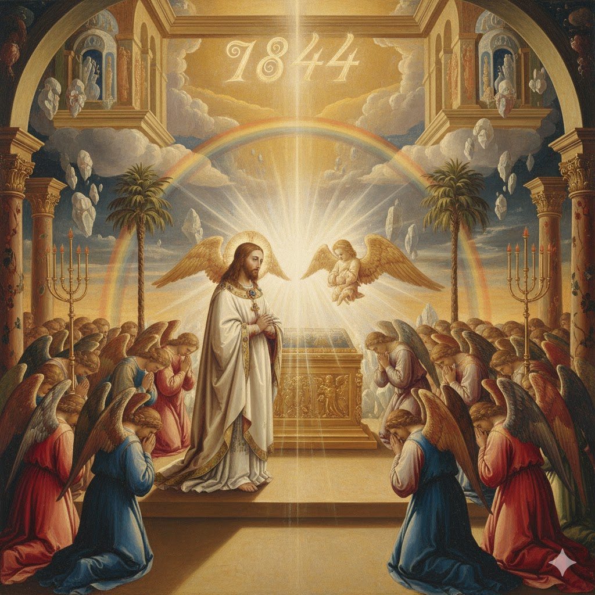
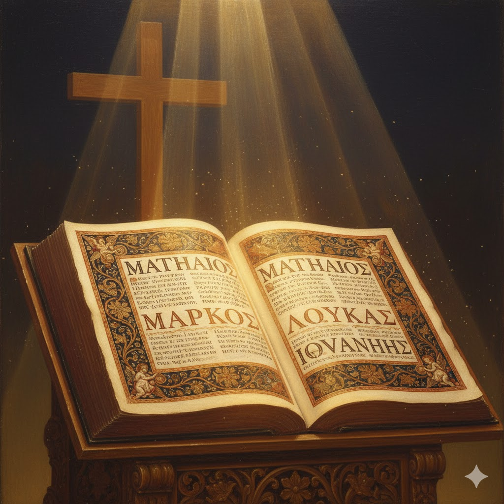
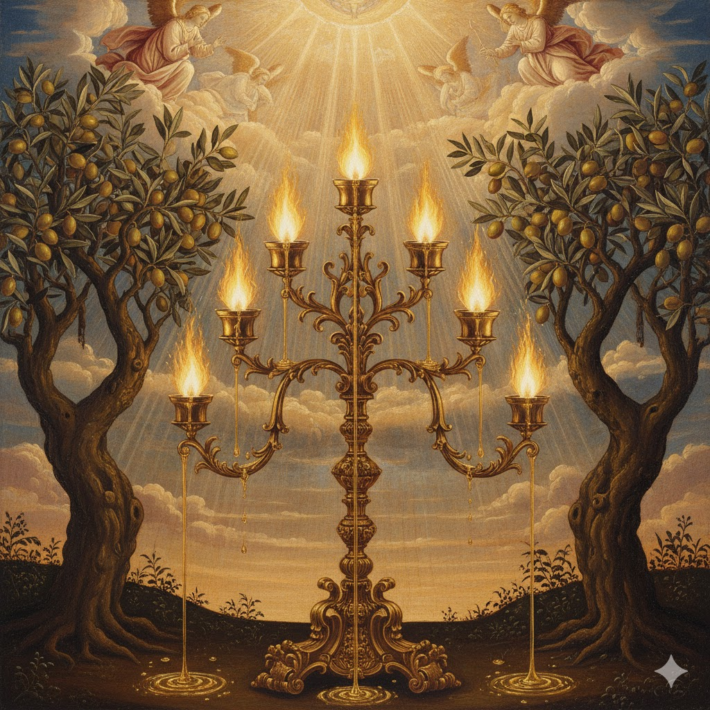
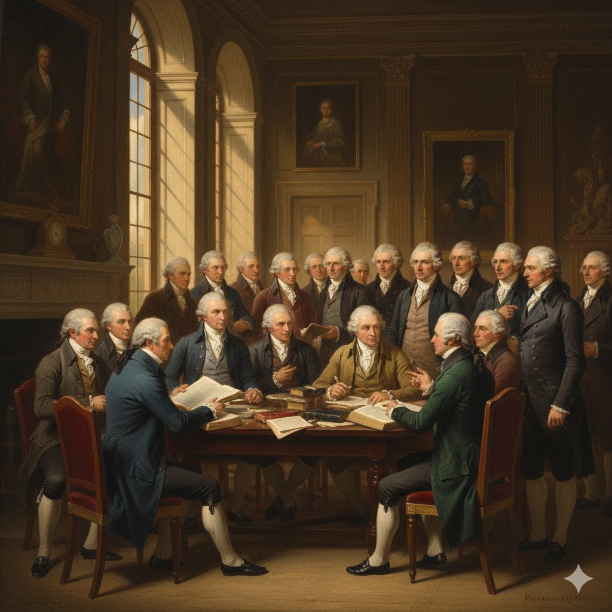

Introdução
Em nosso último estudo aprendemos sobre o grande desapontamento ocorrido no dia 22 de outubro de 1844. Após este evento, aqueles que continuaram estudando as profecias viram que, em lugar da Vinda de Cristo a esta Terra, no fim dos 2.300 anos, Cristo iniciou no santíssimo do Santuário Celestial uma obra de investigação e juízo.
Hoje estudaremos o capítulo 11 de Apocalipse, versos 1-14 que, semelhante ao capítulo 10, é ainda um interlúdio antes do toque da sétima e última trombeta (Apocalipse 11:15-18). O que João estava para testemunhar era uma verdadeira batalha entre a Bíblia, a Palavra de Deus, e o ateísmo. Essa batalha alcançou seu clímax na Revolução Francesa, que ocupa um lugar na profecia bíblica, destacando-se por seu ódio ao Cristianismo.

O Santuário de Deus em Destaque

As Duas Testemunhas de Deus para a Humanidade
📜 Antigo Testamento

39 livros - A preparação para o Messias
📖 Novo Testamento

27 livros - O cumprimento em Cristo

O Período de 1.260 Anos
⏳ O Período de 1.260 Anos (538-1798)
A Besta que Surge do Abismo
🇫🇷 Ateísmo na França

"Não há Deus" - 1793
🔥 Queima de Bíblias
Bíblias recolhidas e queimadas
🗽 Deusa da Razão

Uma mulher como deusa da razão
📅 O Reinado do Terror - 3 Anos e Meio
A Bíblia Volta a Ser Exaltada
🇬🇧 Soc. Bíblica Britânica

Fundada em 1804
🇺🇸 Soc. Bíblica Americana
Fundada em 1816
🌍 Bíblia no Mundo

Mais de 2.500 línguas
Conclusão
A Palavra de Deus sofreu ataques terríveis no decorrer da história, mas o mais interessante é que ela mesma apresentava profecias acerca destas investidas, oferecendo inclusive datas e períodos. O que você acha disso?
Deus, por meio da Sua Palavra, demonstra que podemos confiar em Suas revelações e, mais do que isso, que devemos examinar as Escrituras e viver conforme seus ensinos para termos uma vida segura e feliz.

📝 MINHA DECLARAÇÃO DE FÉ
Assinale com um X se concordar com as declarações abaixo: